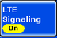
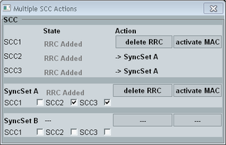
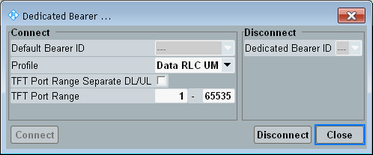
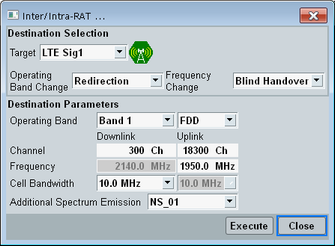
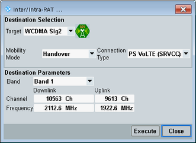

The individual connection states are controlled via the ON | OFF key, via hotkeys and via the UE.
The available hotkeys depend on the current connection state. All possible hotkeys are described in the following.
For background information, refer to "Connection States".

To turn the DL signal transmission on or off, use the ON | OFF key or right-click the softkey. The current state is shown by the softkey. The signal transmission can be switched off any time, independent of the current connection state. A yellow hour glass symbol indicates that the signaling generator is turned on or off.
The state "RDY" means that the signaling application is ready to receive an inter-RAT handover from another signaling application (e.g. from WCDMA). This state is initiated by the application acting as source of the handover.
Remote command:Any interaction with a UE requires an LTE downlink signal (cell). If the signal is available (state ON, no hour glass), connection control hotkeys can be present in the hotkey bar.
The available hotkeys depend on the current packet-switched state, RRC state, SCC state, connection type and selected component carrier tab.
- The SCC activation mode, see "SCC Activation Mode"
- Whether SCCs are grouped into a synchronization set or not, see "Multiple SCC Actions (hotkey)"
To access hotkeys for a specific component carrier, select the corresponding tab. Example: For hotkey "SCC2 On", select the tab "SCC2". Via the "PCC" tab, you can access hotkeys for the PCC and for the SCC1.
The possible hotkeys are listed in the following table.
Hotkey | Description |
|---|---|
"Connect" | |
"Disconnect" | Release a dedicated bearer connection in test mode. |
"Detach" | Send a detach request to the UE and detach the UE (independent of UE reaction to the request). |
"Send SMS" | Send an SMS message to the UE. |
"Inter/Intra-RAT" | |
"SCC<n> On" "SyncSet A/B On" | Switch on the DL signal of SCC<n> or of all SCCs being member of the synchronization set A/B. |
"SCC<n> Off" "SyncSet A/B Off" | Switch off the DL signal of SCC<n> or of all SCCs being member of the synchronization set A/B. |
"SCC<n> add RRC" "SyncSet A/B add RRC" | Add an RRC connection for SCC<n> or for all SCCs of the synchronization set A/B. |
"SCC<n> delete RRC" "SyncSet A/B delete RRC" | Delete the RRC connection for SCC<n> or for all SCCs of the synchronization set A/B. |
"SCC<n> activate MAC" "SyncSet A/B activate MAC" | Activate MAC for SCC<n> or for all SCCs of the synchronization set A/B. |
"SCC<n> deactivate MAC" "SyncSet A/B deactiv. MAC" | Deactivate MAC for SCC<n> or for all SCCs of the synchronization set A/B. |
The hotkey is displayed for carrier aggregation scenarios with more than one SCC. It opens a dialog box for configuration of SCC synchronization sets. The dialog box allows you also to trigger state transitions.

The upper part lists the individual SCCs. The lower part lists the synchronization sets A and B.
Via the checkboxes, you can assign SCCs to synchronization sets. An SCC can belong to one of the two sets or it can belong to no set at all. A set and an SCC to be added to the set must have the same state.
The column "Action" contains buttons for SCC state transitions. These buttons are an alternative to the corresponding hotkeys, see "Connection control hotkeys".
There are state transition buttons for synchronization sets containing at least one SCC. And there are buttons for SCCs that do not belong to a set. For SCCs that belong to a set, the column "Action" indicates the set.
If you change the state of a synchronization set, a single message is sent to the UE, ordering the transition for all SCCs of the set. This rule applies to all SCC activation modes.
Remote command:The UE must attach to make the "Connect" hotkey available.
- "Testmode": The hotkey sets up a single dedicated bearer with predefined default settings.
- "Data Application": The hotkey opens a dialog box for configuration, connection and release of multiple dedicated bearers.
Option R&S CMW-KS510 is required. Without this option, a single dedicated bearer with predefined default settings is set up.
The dialog box is described in the following.
Use the "Connect" section of the dialog box to configure a dedicated bearer. Then press the "Connect" button to establish the bearer with the configured settings.
"Default Bearer ID" selects the default bearer, to which the dedicated bearer is to be mapped. For more details about the ID, see "Default Bearer".
"Profile" selects a dedicated bearer profile. The profiles contain optimum bearer settings for voice calls, video calls and data connections with high throughput in RLC acknowledged or unacknowledged mode. The most important bearer settings are listed in Table "Bearer settings depending on the Profile".
"TFT Port Range" selects the destination ports for which traffic is to be routed to the dedicated bearer. If you set up several dedicated bearers, the port ranges of the bearers must not overlap.
By default, the configured TFT port range is used for the uplink and for the downlink. If you want to configure different ranges for the uplink and the downlink, enable "TFT Port Range Separate DL/UL".
In total, up to eight bearers can be established in parallel (default plus dedicated bearers).
Voice | Video | Data AM | Data UM | |
|---|---|---|---|---|
QCI | 1 | 2 | 6 | 6 |
PDCP "discardTimer" | 50ms | 50ms | infinity | infinity |
"pdcp-SN-size" (RLC UM) | len7bits | len7bits | - | len12bits |
RLC mode (RLC AM/UM) | UM | UM | AM | UM |
"sn-FieldLength" (RLC UM) | size5 | size5 | - | size10 |
"t-Reordering" (RLC UM, AM) | 10ms | 10ms | 20ms | 20ms |
"t-StatusProhibit" (RLC AM) | - | - | 5ms | - |
"t-PollRetransmit" (RLC AM) | - | - | 60ms | - |
"pollPDU" (RLC AM) | - | - | p32 | - |
"pollByte" (RLC AM) | - | - | 250kB | - |
"maxRetxThreshold" (RLC AM) | - | - | t16 | - |
Use the "Disconnect" section of the dialog box to release an established dedicated bearer.
Select the bearer via the "Dedicated Bearer ID" list. Then press the "Disconnect" button.
For more details about the ID, see "Dedicated Bearer".
Remote command:The hotkey opens a dialog box for selection and configuration of the handover destination and initiation of the handover.
The LTE signaling application supports a handover within the signaling application, e.g. to another operating band, and a handover to another instrument or to another signaling application.


For a detailed step-by-step description of a handover, see "How to perform a handover".
This parameter selects the handover destination. For a handover to another instrument, select "No Connection" as target.
The cell icon indicates the cell state of the currently selected destination. When you select another signaling application, e.g. "WCDMA Sig1", the destination cell is switched on automatically and the target cell state changes to RDY (ready for the handover).
Remote command:Selects the mechanism to be used for a handover to another LTE signaling instance or to another signaling application, for example to GSM or WCDMA.
Circuit-switched fallback requires option R&S CMW-KS510.
For a description of the mobility modes, see "Handover".
Remote command:These settings are displayed for a handover within the signaling application.
The setting "Operating Band Change" selects the mechanism to be used for changing the band, without changing the cell bandwidth.
The setting "Frequency Change" selects the mechanism to be used for changing the frequency, without changing the band and the cell bandwidth.
If the cell bandwidth is changed, redirection is used independent of these settings.
For a description of the mobility modes, see "Handover".
Remote command:This setting is only relevant for the handover of a VoLTE call to another signaling application.
It selects the call type to be set up at the destination. Option R&S CMW-KS510 is required.
"PS VoLTE (SRVCC)" | A voice call is established. The VoLTE call is handed over seamlessly via SRVCC. |
"PS Data (End2End)" | An E2E packet data connection via the DAU is established. |
The "Destination Parameters" display current settings of the selected signaling application target, typically operating band and channels. You can modify these settings before starting the handover.
For a handover to another instrument, the "External Destination Parameters" are displayed instead (radio access technology and typically operating band and channel). Configure them according to the actual configuration of the other instrument. There is no communication between the two instruments, so the settings at both instruments must match.
The commands listed here are relevant for handover within the LTE signaling application and for handover to another instrument.
For a handover to another signaling application in the same instrument, use the commands provided by the signaling application target. There are no special handover commands for this purpose.
Remote command:To initiate a handover with the configured settings, press the "Execute" button.
Remote command: